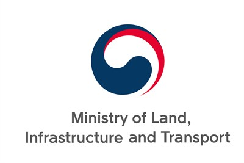

Development of Virtual Environment and Demonstration Technology for Automated Driving based on Metaverse
A long-running national research program building a metaverse-based virtual environment for validating automated-driving technology. My work in this project focuses on behaviorally realistic traffic agents — pedestrians, cyclists, and other vehicles — that can stress- test autonomous-vehicle decision-making in scenarios that are impractical to reproduce on real roads. This project provides the simulation infrastructure for several of my ongoing studies on reinforcement-learning–based adversarial agents and humanoid-driven vehicle interactions.
자율주행 기술 검증을 위한 메타버스 기반 가상환경을 구축하는 장기 국가 연구 사업입니다. 본 프로젝트에서 저는 실제 도로에서 재현하기 어려운 시나리오를 통해 자율주행차량의 의사결정을 압박할 수 있는 행동적으로 현실적인 교통 에이전트(보행자·자전거·기타 차량)에 집중합니다. 이 프로젝트는 강화학습 기반 적대적 에이전트와 휴머노이드 운전자 상호작용 연구의 시뮬레이션 인프라를 제공합니다.